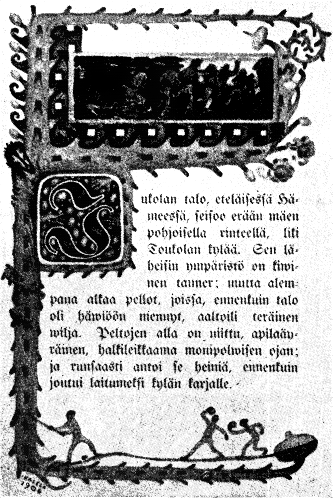

Jukolan talo, eteläisessä Hämeessä, seisoo erään mäen pohjoisella rinteellä, liki Toukolan kylää.
Sen läheisin ympäristö on kivinen tanner, mutta alempana alkaa pellot, joissa, ennenkuin talo oli häviöön mennyt, aaltoili teräinen vilja.
jatkuu...